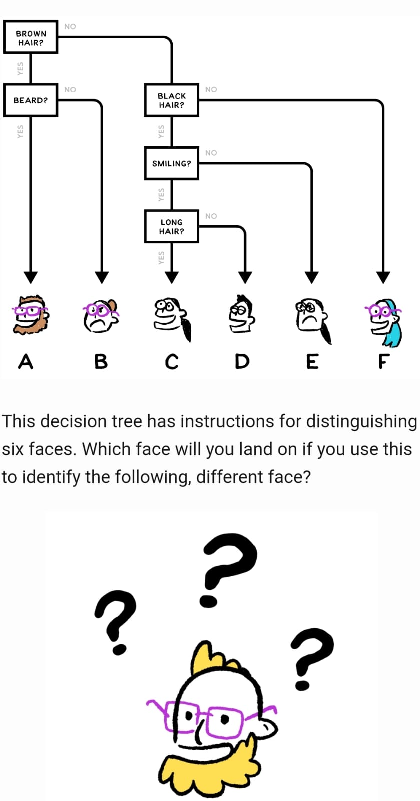
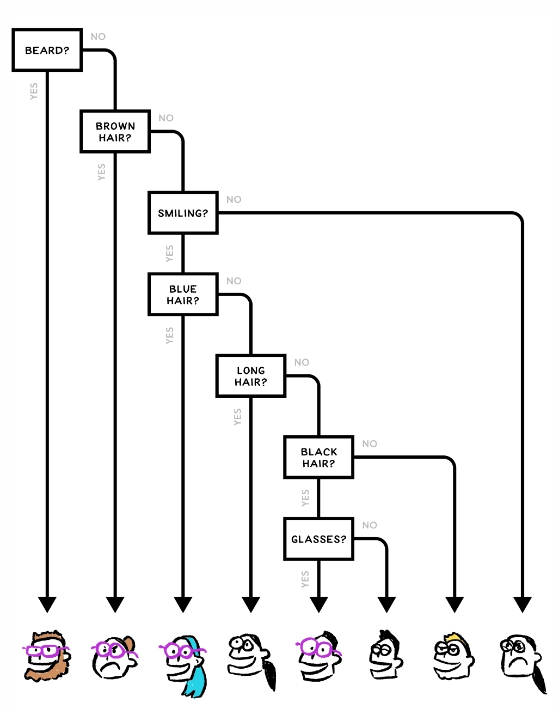
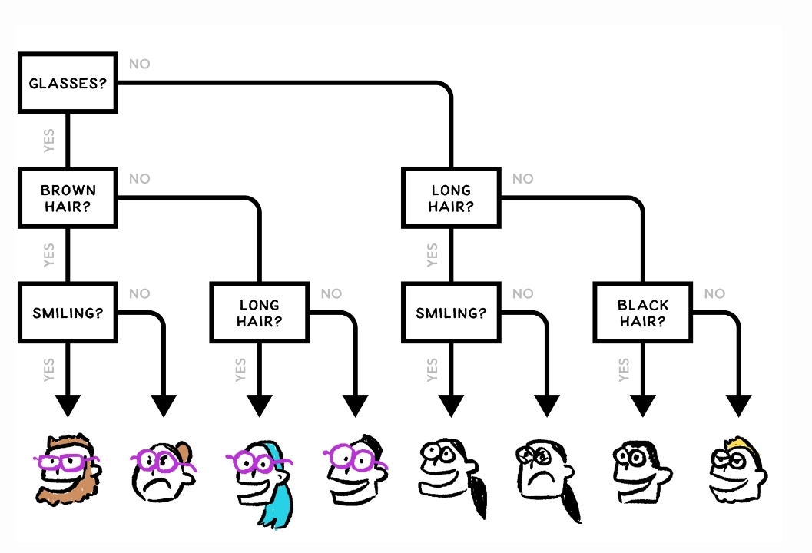

Additional material for lesson 3¶
Simple touch to If…Else¶
See also
Very nice exercises about conditionals here.
Why choosing if…else wisely is important.
  Switch debounce methods¶
Switch bounce is the mechanical bouncing of the contacts in an electrical switch, causing what should be a single event to appear to be multiple events (e.g. multiple presses of a push button). It is a feature of most electical swiches, and causes problems when the switches are interfaced with fast digital electronics, such as microcontrollers. Many solutions have been developed to overcome these issues, and thus it is impossible to cover all of them. This chapter aims to provide you with some effective hardware and software solutions.
Warning
The part about switch debounce is not ready.
Measuring switch bounce using oscilloscope¶
Software solutions¶
Switch debounce in hardware is a effective solution, but additional hardware increases the cost and thus it is often possible to save some cost by implementing software debounce. Switch change may be detected by polling the state of the digital input, or the input may generate an interrupt to the CPU. Regardless of which metod one is using, care must be taken to not detect several push events because of bouncing.
Polling is often the preferred method to detect push buttons, although constant polling does waste some CPU cycles. In applications such as battery operated devices, the microcontroller could be put into a sleep state in order to save power when it is not in use. A interrupt is often required to wake up the controller, but afterwards in could enter a polling mode for the inputs. In simple applications the polling could be acheived in the main loop, or by using a timer interrupt where the ISR polls the inputs. If the controller is running a operating system, it could also be possible to use a thread for the polling.
The interrupt solution requires extra attention because the bouncing in some cases may cause the ISR to fire many times within a short time period. This can have a bad impact on the performance of the microcontroller. The solution will often be that the pin change interrupt is temporary disabled by the ISR on the first invocation. After some delay the interrupt is re-enabled.
Because many applications require debouncing of more than one push button, it is often useful to create a library which provides a consistant way of adding debounce to the inputs that require this.
In this section we will look at more sophisticated switch debounce techniques.
The following function allows de-bouncing up to 8 digital inputs simultaneously:
uint8_t switch_debounce(uint8_t current_state){
static uint8_t asserted = 0x00;
static uint8_t previous = 0x00;
asserted |= (previous & current_state);
asserted &= (previous | current_state);
previous = current_state;
return asserted;
}
Measure the bouncing using interrupt¶
A oscilloscope is a good tool for evaluating the bouncing problemens of a push button. If you do not have access to a oscilloscope, it is also possible to use the controller itself to measure the bouncing. This method is less accurate, because the voltage levels during the bouncing period may vary, and only occationally cause spurious detection of button events.
The following example is using a pin change interrupt to count the bouncing of the signal on a digital input. Note that the ISR fires on both rising and falling edge of the signal, thus you will at least trigger the ISR once on button push, and once on button release.
#include <Arduino.h>
const uint8_t pushButton1 = 12;
const uint8_t greenLED = 7;
uint8_t interrupt_counter = 0;
uint8_t isr_flag = 0;
uint8_t first_isr_flag = 1;
uint32_t old_millis = 0;
void pin_change_interrupt_setup();
void setup() {
pinMode(pushButton1, INPUT);
pinMode(greenLED, OUTPUT);
Serial.begin(9600);
Serial.println("Controller starting...");
pin_change_interrupt_setup();
}
void loop() {
if(isr_flag){
if(first_isr_flag){
old_millis = millis();
first_isr_flag = 0;
}
if(millis() > old_millis + 500){
Serial.print("Button ints: ");
Serial.println(interrupt_counter);
// The led should only change state if the ISR fires a odd number of times
Serial.print("Should LED change it's final state? ");
if(interrupt_counter%2 == 0){
Serial.println("No");
}
else {
Serial.println("Yes");
}
first_isr_flag = 1;
isr_flag = 0;
interrupt_counter = 0;
}
}
}
/*
* Arduino pin 12 is connected to PCINT 4.
*/
void pin_change_interrupt_setup(){
cli();
// Enable pin change interrupts PCINT3, PCINT4, and PCINT5.
PCMSK0 |= ((0 << PCINT5) | (1 << PCINT4) | (0 << PCINT3));
// Clear any interrupts.
PCIFR |= (1 << PCIF2) | (1 << PCIF1) | (1 << PCIF0);
// Pin Change Interrrupt Control Register (PCICR)
PCICR |= (1 << PCIE0);
sei();
}
/*
* Pin change ISR for D8 to D13.
* The ISR fires on both rising and falling edge of the input.
*/
ISR (PCINT0_vect){
digitalWrite(greenLED, !digitalRead(greenLED));
isr_flag = 1;
interrupt_counter++;
}
Delay method¶
The following method checks for a rising edge on the digital input, and subsequently ignores any change of state for a given delay period. A important issue with this method is that the required delay period will vary depending on the type of switch that i used.
#include <Arduino.h>
const uint8_t push_button_1 = 12;
const uint8_t greenLED = 7;
void button_press_debounce();
void setup() {
pinMode(push_button_1, INPUT);
pinMode(greenLED, OUTPUT);
Serial.begin(9600);
}
void loop() {
button_press_debounce();
}
/*
* Mechanical switch debounce.
*/
void button_press_debounce(){
static uint32_t latest_edge_millis = 0;
static uint8_t previous_button_state = LOW;
static uint8_t button_event = LOW;
static uint16_t counter = 0;
uint8_t button_state = digitalRead(push_button_1);
if(button_state != previous_button_state){
if(button_state == HIGH){
Serial.print("Rising edge.");
Serial.println(counter);
counter++;
latest_edge_millis = millis();
button_event = HIGH;
}
previous_button_state = button_state;
}
if(millis() > latest_edge_millis + 100 && (button_event == HIGH)){
Serial.println("Button event detected");
button_event = LOW;
}
}
Shift register method¶
The following example is intended to demonstrate the operation of the shift register debounce method, by printing the state of the shift register to the UART. The shift register method is in some ways superior to the delay method, because it will detect if the input is stable rather than simply detecting a edge, and ignoring the input for some period. The sampling delay for the shift register method may be much shorter than the delay for the delay method.
#include <Arduino.h>
const uint8_t push_button_1 = 12;
const uint8_t greenLED = 7;
void button_press_debounce();
void setup() {
pinMode(push_button_1, INPUT);
pinMode(greenLED, OUTPUT);
Serial.begin(9600);
}
void loop() {
static uint32_t old_millis = 0;
/*
* This (500 ms) is not the required delay for efficient switch debounce.
* It is simply used for demonstrational purposes, to allow us to observe
* the output on the terminal.
*/
if(millis() > old_millis + 500){
button_press_debounce();
old_millis = millis();
}
}
/*
* Mechanical switch debounce using shift register.
*
* This function must be called with fixed delayed intervals
* in order to avoid sampling the button state to quickly.
*/
void button_press_debounce(){
static uint16_t button_debounce_register;
uint8_t button_state = digitalRead(push_button_1);
button_debounce_register = (button_debounce_register << 1) | button_state | 0xc000; // 1110 0000 0000 0000
Serial.println(button_debounce_register,BIN);
if(button_debounce_register == 0xe000){
Serial.println("Button event.");
digitalWrite(greenLED, HIGH);
}
}
Using a timer interrupt to poll the inputs¶
The following example shows one way to poll three digital inputs using a timer interrupt. The get_button_event(push_button_t button) function is included in order to abstract away the operation of the button event detect algorithm. This is a more complete example of how to use debouncing in an application, but it could certainly be improved. In particular the operation of the switch debounce could be hidden in a separate file (a library), and the events could be posted to a queue.
#include <Arduino.h>
#include <TimerOne.h>
const uint8_t push_button_1_pin = 12;
const uint8_t push_button_2_pin = 11;
const uint8_t push_button_3_pin = 10;
const uint8_t greenLED = 7;
const uint8_t yellowLED = 6;
const uint8_t redLED = 5;
uint32_t counter = 0;
volatile uint8_t button_events = 0;
typedef enum {
PUSH_BUTTON_1 = 0,
PUSH_BUTTON_2,
PUSH_BUTTON_3
} push_button_t;
void timer1_interrupt();
uint8_t get_button_event(push_button_t button);
void setup() {
pinMode(greenLED, OUTPUT);
pinMode(yellowLED, OUTPUT);
pinMode(redLED, OUTPUT);
Timer1.initialize(1000);
Timer1.attachInterrupt(timer1_interrupt);
Serial.begin(9600);
}
void loop() {
if(get_button_event(PUSH_BUTTON_1)){
Serial.println("Detected push button 1 event");
}
if(get_button_event(PUSH_BUTTON_2)){
Serial.println("Detected push button 2 event");
}
if(get_button_event(PUSH_BUTTON_3)){
Serial.println("Detected push button 3 event");
}
// counter++;
// Serial.print("Iterasjon: ");
// Serial.println(counter);
// delay(1000);
}
/*
* The timer1 ISR is responsible for polling all the push button inputs.
* If a edge is detected, the ISR will flag the input.
*/
void timer1_interrupt(){
uint8_t button_state = 0;
static uint8_t last_button_state = 0;
static uint32_t last_state_change_time[3] = {};
button_state |= (digitalRead(push_button_1_pin) << PUSH_BUTTON_1);
button_state |= (digitalRead(push_button_2_pin) << PUSH_BUTTON_2);
button_state |= (digitalRead(push_button_3_pin) << PUSH_BUTTON_3);
for(uint8_t i = 0; i < 3; i++){
if(((button_state >> i) & 1) != ((last_button_state >> i) & 1)){
last_state_change_time[i] = millis();
}
if(millis() > (last_state_change_time[i] + 50)){
last_button_state ^= (1 << i);
if((button_state >> i) & 1){
button_events |= (1 << i);
}
}
}
}
/*
* The get_button_event() function is used to check for new push button events.
* It is not polling from an event queue, it simply returns true if the event flag for the
* given button is high.
*
* A event queue would probably be better.
*/
uint8_t get_button_event(push_button_t button){
cli();
switch (button)
{
case PUSH_BUTTON_1:
if((button_events >> PUSH_BUTTON_1) & 1){
button_events &= ~(1 << PUSH_BUTTON_1);
sei();
return 1;
}
break;
case PUSH_BUTTON_2:
if((button_events >> PUSH_BUTTON_2) & 1){
button_events &= ~(1 << PUSH_BUTTON_2);
sei();
return 1;
}
break;
case PUSH_BUTTON_3:
if((button_events >> PUSH_BUTTON_3) & 1){
button_events &= ~(1 << PUSH_BUTTON_3);
sei();
return 1;
}
break;
default:
break;
}
sei();
return 0;
}
Pin change interrupt debounce with smoothing capacitor¶
Warning
You should normally avoid the pin change interrupts for push buttons, unless you are absolutely sure that you need it. The aforementioned methods are simpler to implement, and more general in nature. The pin change interrupt is a specific feature of some of the AVR controllers.
The problem with using interrupts with switch inputs is that bouncing will cause the ISR to fire multiple times, unless the ISR disables the interrupt on the first invocation. This complicates things, although it is certainly possible to do.
Pin change interrupt debounce software only¶
In this section we are demonstrating one way of detecting and debouncing inputs using pin change interrupts. The following algorithm is used:
#include <Arduino.h>
const uint8_t pushButton1 = 2;
const uint8_t pushButton2 = A1;
const uint8_t pushButton3 = 12;
const uint8_t greenLED = 7;
const uint8_t yellowLED = 6;
const uint8_t redLED = 5;
void pin_change_interrupt_setup();
void setup() {
pinMode(pushButton1, INPUT);
pinMode(pushButton2, INPUT);
pinMode(pushButton3, INPUT);
pinMode(greenLED, OUTPUT);
pinMode(yellowLED, OUTPUT);
pinMode(redLED, OUTPUT);
pin_change_interrupt_setup();
Serial.begin(9600);
}
void loop() {
}
/*
* Arduino pin 13, 12, and 11 are connected to PCINT 5, 4, and 3.
*/
void pin_change_interrupt_setup(){
cli();
// Enable pin change interrupts PCINT3, PCINT4, and PCINT5.
PCMSK0 |= ((1 << PCINT5) | (1 << PCINT4) | (1 << PCINT3));
// Clear any interrupts.
PCIFR |= (1 << PCIF2) | (1 << PCIF1) | (1 << PCIF0);
// Pin Change Interrrupt Control Register (PCICR)
PCICR |= (1 << PCIE0);
sei();
}
/*
* Pin change interrupt switch software debounce algorithm.
*
* 1. Disable interrupt on the pin for a short delay.
* 2. After the delay check the state of the input.
* 3. If still high interpet as valid button push, but re-enable interrupts regardless.
*/
// Pin change ISR for D8 to D13
ISR (PCINT0_vect){
digitalWrite(greenLED, !digitalRead(greenLED));
}
Creating a library for software debounce¶
Multi tasking on the microcontroller¶
Although we are using the delay() function in almost everywhere, it is a very dangerous function. It halts any processing completely. No reading of sensors, mathematical calculations, or pin manipulation can go on during delay function.
Exercise for home: Modify the interrupt code without using delay functions. There is a very nice project using an LCD in this link.
No more delay()¶
Using delay() to control timing is probably one of the very first things you learned when experimenting with the Arduino. Timing with delay() is simple and straightforward, but it does cause problems down the road when you want to add additional functionality. The problem is that delay() is a “busy wait” that monopolizes the processor.
During a delay() call, you can’t respond to inputs, you can’t process any data and you can’t change any outputs. The delay() ties up 100% of the processor. So, if any part of your code uses a delay(), everything else is dead in the water for the duration.
Blink without delay:
/*
http://www.arduino.cc/en/Tutorial/BlinkWithoutDelay
*/
// constants won't change. Used here to
// set pin numbers:
const int ledPin = 13; // the number of the LED pin
// Variables will change:
int ledState = LOW; // ledState used to set the LED
long previousMillis = 0; // will store last time LED was updated
// the follow variables is a long because the time, measured in miliseconds,
// will quickly become a bigger number than can be stored in an int.
long interval = 1000; // interval at which to blink (milliseconds)
void setup() {
// set the digital pin as output:
pinMode(ledPin, OUTPUT);
}
void loop()
{
// here is where you'd put code that needs to be running all the time.
// check to see if it's time to blink the LED; that is, if the
// difference between the current time and last time you blinked
// the LED is bigger than the interval at which you want to
// blink the LED.
unsigned long currentMillis = millis();
if(currentMillis - previousMillis > interval) {
// save the last time you blinked the LED
previousMillis = currentMillis;
// if the LED is off turn it on and vice-versa:
if (ledState == LOW)
ledState = HIGH;
else
ledState = LOW;
// set the LED with the ledState of the variable:
digitalWrite(ledPin, ledState);
}
}
Blink without delay (extended):
// These variables store the flash pattern
// and the current state of the LED
int ledPin = 13; // the number of the LED pin
int ledState = LOW; // ledState used to set the LED
unsigned long previousMillis = 0; // will store last time LED was updated
long OnTime = 250; // milliseconds of on-time
long OffTime = 750; // milliseconds of off-time
void setup()
{
// set the digital pin as output:
pinMode(ledPin, OUTPUT);
}
void loop()
{
// check to see if it's time to change the state of the LED
unsigned long currentMillis = millis();
if((ledState == HIGH) && (currentMillis - previousMillis >= OnTime))
{
ledState = LOW; // Turn it off
previousMillis = currentMillis; // Remember the time
digitalWrite(ledPin, ledState); // Update the actual LED
}
else if ((ledState == LOW) && (currentMillis - previousMillis >= OffTime))
{
ledState = HIGH; // turn it on
previousMillis = currentMillis; // Remember the time
digitalWrite(ledPin, ledState); // Update the actual LED
}
}